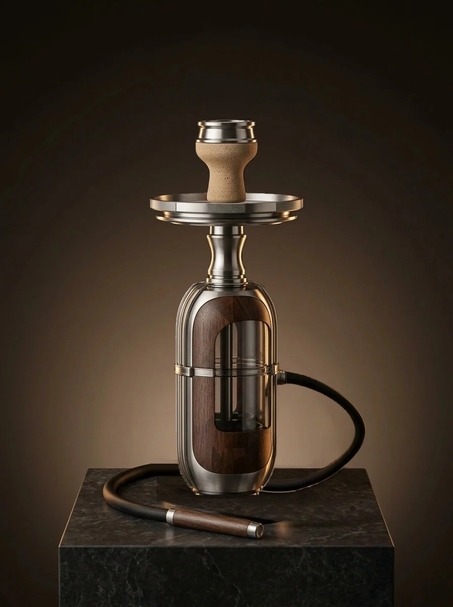

Eastman Tritan™
تقنية القاعدة غير القابلة للكسر.
تُصنّع طرازات NARION السبعة عشر (كوزا، لادين، مانوليا وكامل مجموعة Series 01) حالياً بـ قاعدة كريستال يدوية سميكة الجدار وخشب طبيعي صلب وهيكل فولاذ مقاوم للصدأ مشغول على مكائن CNC بخمسة محاور. أما خيار القاعدة البوليمرية غير القابلة للكسر Eastman Tritan™ — الذي يتطلب قوالب حقن صناعية عالية الحمولة — فهو مدرج ضمن خارطة طريق المرحلة الثانية (المشروع القادم) للمقاهي والصالات ذات الدوران العالي.

لماذا نطوّر تقنية Eastman Tritan™؟
إلى جانب قواعد الكريستال اليدوية الفاخرة في Series 01، إليك ما ستقدمه تقنية القاعدة البوليمرية المقاومة للكسر في المرحلة الثانية للصنّاع والمقاهي:
Eastman Tritan™
ليس أكريليك عادياً (PMMA) ولا بولي كربونات؛ بل كوبوليستر طبي خالٍ تماماً من BPA (0%)، مقاوم للتشقق من الزيوت العطرية كالنعناع واليانسون والحمضيات، بنقاء الكريستال البوهيمي (نفاذية ضوء 92%).
بايونيت 45° مدمج بالحقن
بدلاً من الحشوات المطاطية التي تحبس الروائح أو المواد اللاصقة، يُدمج طوق الفولاذ المقاوم للصدأ AISI 304 داخل البوليمر المنصهر أثناء الحقن ليحقق إغلاقاً محكماً في ربع دورة (45°).
تقرير الجدوى والتكلفة للمرحلة 2
اطّلع على ملف الدراسة الهندسية والمالية المصمم للقضاء نهائياً على كسر القواعد أثناء الغسيل والنقل في صالات الشيشة المزدحمة.
📄 تحميل ملف Tritan™ بصيغة PDF ←اكتشف طرازات الكريستال الـ 17 ورأس Smart HMD الذكي
تعرّف الآن على أطقم الشيشة الـ 17 المصنوعة من الكريستال اليدوي السميك والخشب الصلب وفولاذ CNC، مع نظام Smart HMD الخالي من الفحم بصفر (0.0 ppm) أول أكسيد الكربون.